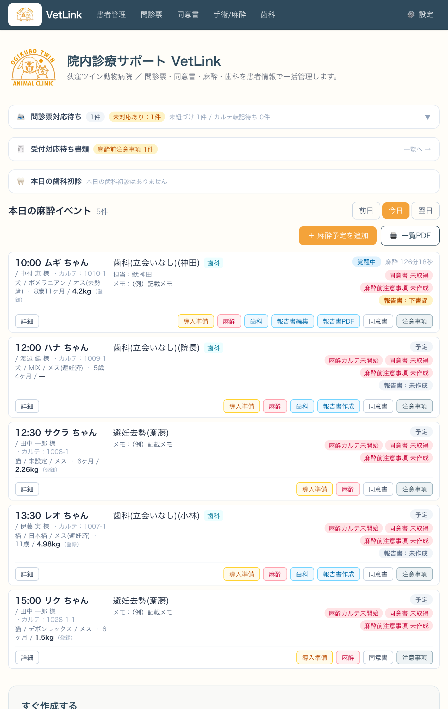
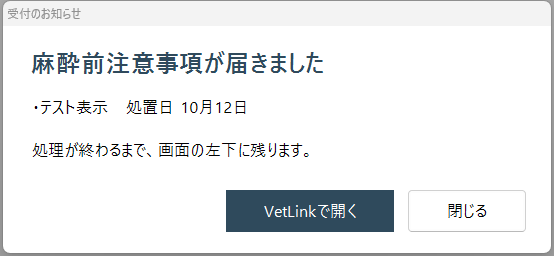
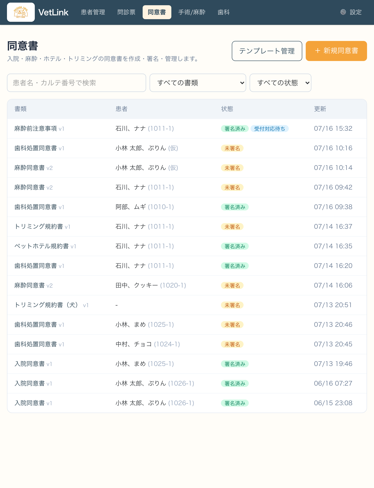
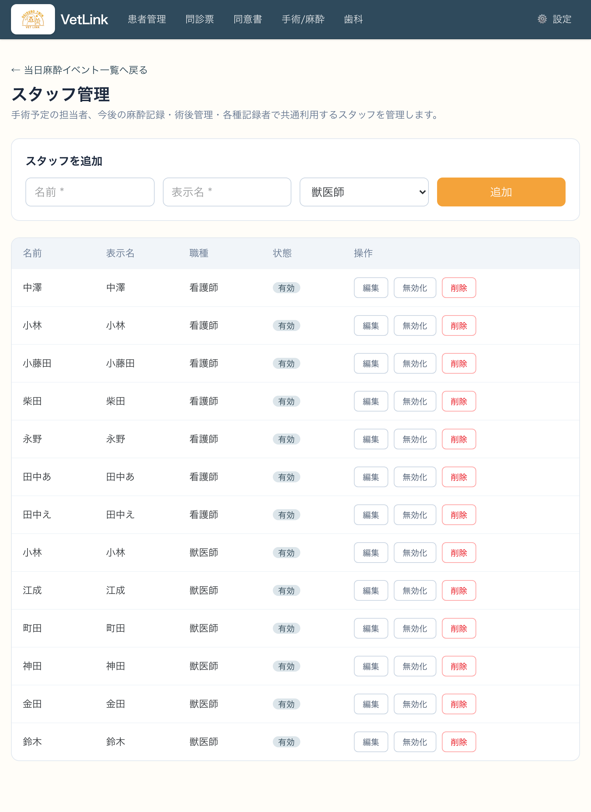

院内書類（旧 VetLink）使い方ガイド ← ガイド一覧へ 受付・スタッフ・獣医師向け ｜ 2026年11月18日版 ｜ 荻窪ツイン動物病院
問診票・同意書・麻酔前注意事項などの書類を、患者情報でひとつにまとめて院内で扱うアプリです。カルテ番号を入れるとアーミックスから患者情報を自動取込。同意書はiPadで署名でき、入院同意書は署名すると入院管理アプリへ自動連携します。使いにくいところはどの画面からでも「💬 ここが不便」で送れます。iPad・PC・スマホで使えます（iPadが一番見やすいです）。
- アドレスとパスコードは今までと同じです（名前が変わるだけ）。
- 手術・麻酔の予定・導入薬の準備・麻酔の記録・麻酔の薬の設定は、11/21 の朝から麻酔カルテで行います（麻酔カルテ 使い方ガイド）。11/20 までは今までどおりこのアプリで記録してください。今までの手術・麻酔の記録は麻酔カルテへ移してあります。
- 同意書・麻酔前注意事項・問診票などは、これまでどおりこのアプリで作ります。
- 歯科の記録は歯科カルテで書きます（歯科カルテ 使い方ガイド）。
1. アプリを開く
| 場所 | URL |
|---|---|
| 院内のPC・iPad | https://giiv6wcx.lamarck-lan.com:13007 |
| 院外（Tailscale を ON） | https://serverpc.tail2de5bb.ts.net:8450（院の Tailscale 設定が必要） |
スタッフ用パスコードが要ります（2026-10-19 から）。開くと「スタッフ用パスコードを入力してください」の画面が出るので、入院管理アプリと同じパスコードを入れて「ログイン」。一度入れると、その端末（ブラウザ）は30日間覚えます。パスコードが分からなければ院長・永野さんへ。飼い主さまがホームページから使う問診フォームは、今までどおりパスコードなしで開けます。
2. 全体の流れ
上のメニュー（全体像）
| メニュー | できること |
|---|---|
| 患者管理 | 全機能で共通に使う患者の台帳。カルテ番号でアーミックスから取り込めます。 |
| 問診票 | 初診・歯科の問診票づくり。ホームページから届いた問診票の取り込みも。 |
| 同意書 | 入院・麻酔・歯科・ホテル・トリミングの同意書／規約書を作成・iPad署名・管理。 |
| 手術/麻酔 | 2026-11-21 から麻酔カルテで行います（下の5章）。 |
| 歯科 | 歯科の記録は歯科カルテで書きます（下の8章）。 |
| その他書類 | お花送り状など。カルテ番号から飼主名・住所・電話を自動で入れて印刷できます。お花送り状は画面から FAX でも送れます（下の「お花の送り状を FAX で送る」）。 |
| ⚙️ 設定 | 文書テンプレート・スタッフの管理（麻酔の薬の設定は 11/21 から麻酔カルテ）。 |
メニューの右端には、どの画面からでも使えるボタンが2つあります。
| 🆕 更新履歴 | アプリが何日に何が変わったかを、日付ごとに読めます。 |
| 💬 ここが不便 | 使いにくい点をその場で送れます（下の11章）。 |
お花の送り状を FAX で送る受付
「その他書類」→「お花の送り状」で作った送り状を、印刷せずに画面から中央フラワーさんへ FAX できます（2026年11月5日から）。院内の複合機から直接送るので、受付PCで番号を打つ必要はありません。

3. ホーム画面の見方
開くと「今日やること」がひと目で分かります。問診票の対応待ち・受付でお渡しする書類・本日の歯科初診が並びます（手術・麻酔の予定は 11/21 から麻酔カルテの「本日の麻酔」で見ます）。

| 表示 | 意味 |
|---|---|
| 問診票 対応待ち | ホームページから届いた・未処理の問診票の件数。 |
| 受付対応待ち書類 | 署名が済んで、受付でお渡し・説明する書類（麻酔前注意事項など）。「一覧へ」で開けます。 |
| 本日の歯科初診 | その日の歯科の初診を、予約システムから自動で並べます。問診票がまだ届いていない方も出ます（「問診票 未提出」）。ご予約時のメモ（ご相談内容）もここで読めます。 |
| 本日の麻酔イベント | 11/20 まで使います。11/21 からは麻酔カルテの「本日の麻酔」（予定の追加・一覧の印刷もそちら）。 |
画面のいちばん下に「すぐ作成する」があり、よく使う書類・問診票をここから直接作れます（下の表の書類）。
受付PCのお知らせ（麻酔前注意事項が届いたとき）受付
受付PCでは、VetLink を開いていなくても（アーミクスを使っている最中でも）、受付対応待ちに麻酔前注意事項が届くと30秒以内に画面の真ん中に窓が出て、音が鳴ります。受付PCだけの仕組みで、ほかのPC・iPadには出ません。

4. 患者管理
すべての機能で共有される患者の台帳です。カルテ番号・飼主名・動物名・電話番号で検索できます。

- ＋新規患者：カルテ番号を入れて「アーミックスから取り込む」と、種類・品種・性別・年齢・体重を自動で埋められます（受付PCが動いている日中のみ）。
- アーミックスに無い子・仮の子は仮患者として登録し、あとで正式なカルテ番号にひも付けできます。
5. 手術・麻酔（2026-11-21 から麻酔カルテへ）
2026年11月21日（土）の朝から、手術・麻酔の予定・導入薬の準備・麻酔の記録・麻酔の薬の設定は、すべて「麻酔カルテ」で行います。使い方は 麻酔カルテ 使い方ガイド へ。
- 11/20（金）までは、今までどおりこのアプリの「手術/麻酔」で記録してください。
- このアプリの今までの手術・麻酔の記録は、麻酔カルテへ移してあります（麻酔カルテでは見るだけ・印刷はできます）。
- 同意書と麻酔前注意事項は、これまでどおりこのアプリで作ります。麻酔カルテのカードに「同意書：未取得」「麻酔前注意事項：未作成」などの札で出ます。
- 入院カルテへの送り（手術・麻酔の記録）も、11/21 からは麻酔カルテの「入院カルテに送る」から行います。
6. 同意書・規約書（iPad署名）受付獣医師
入院・麻酔・歯科処置・鎮静・ホテル・トリミングの同意書／規約書を作成し、iPadでその場で署名してもらえます。署名済み・未署名で状態を管理します。

- 患者を選ぶ画面でもアーミックス取込が使えます。麻酔・歯科の同意書と麻酔前注意事項の状態（未取得・下書き・署名済み）は、麻酔カルテの本日の麻酔のカードに札で出ます（11/21 から）。
- 入院同意書は、署名が確定すると入院管理アプリへ自動で連携されます（入院管理側で「カルテを作成」を押すだけ）。多頭のグループ同意書でまとめて署名した場合も送られます（2026-10-13 から）。
- 署名が済んだ「お渡し・説明書類」（麻酔前注意事項など）は、ホームの受付対応待ちに出ます。右上の「PDF印刷」から印刷した場合も、受付対応待ちから自動で消えます。
- 多頭飼育のグループ同意書：複数の患者をまとめて選び、一覧表形式の1枚・署名は飼主1名分で作れます。署名後の画面から「グループ全員分を印刷」ができ、一覧ではグループバッジが付きます（1頭ずつの印刷も残してあります）。
- 麻酔前注意事項は入力が自動で残ります：下書き保存を押さずにページを離れても、戻ると入力内容が復元されます。来院日・処置日・来院時間が未記入でも署名できます。
テンプレート管理獣医師

同意書・規約書の本文は病院側で自由に編集できます。編集すると新しいバージョンとして記録され、すでに署名済みの文書には影響しません。
7. 問診票
- 初診問診票／歯科初診問診票を作成できます。既存患者の問診票も作れます。
- 手書きで使いたい時は空の問診票PDFを開いて印刷できます。
- ホームページの問診フォームから届いた未登録の外部問診票は「問診票」タブにまとまり、内容を確認して患者にひも付けます。一覧には初診・歯科初診・既存患者の問診票がすべて出ます（種類が一覧で分かります）。
- カルテ貼付用テキストをコピー：問診票の詳細画面のボタンで、アーミクスのカルテにそのまま貼れる形でコピーできます。
- あとから患者にひも付けられます：問診票・トリミング規約書の詳細画面の「＋ 患者を紐付ける（アーミクス連携）」から、作成済みの書類も後でひも付け・変更ができます。
- 飼主さんは提出後も直せます：送信完了画面の「入力内容を確認・修正する」から修正・再提出でき、最新の内容がスタッフ側に反映されます。
患者詳細の「事前問診票」
患者詳細画面に、飼主さまが来院前に提出した問診票が出ます。「アーミクス用にコピー」でカルテに貼れる形でコピーでき、多頭のご家庭では動物1頭ずつコピーできます。
間違えて作った書類を移す
仮患者で作ってしまった問診票・同意書・麻酔カルテ・歯科治療指針書は、患者詳細の「書類を別患者へ移動」から正しい患者へ移せます（移動の記録も残ります）。
8. 歯科カルテ（歯科カルテへ移りました）
歯科の記録は、独立したアプリ「歯科カルテ」で書きます。このアプリにあった歯科の記録もそちらへ移してあります。使い方は 歯科カルテ 使い方ガイド へ。歯科の同意書・歯科初診問診票は、これまでどおりこのアプリで作ります。
9. 設定（マスタ管理）獣医師
薬剤管理（11/21 から麻酔カルテの「薬の設定」）
麻酔で使う薬と緊急薬の設定は、11/21 から麻酔カルテの「薬の設定」「緊急薬の設定」で行います（麻酔カルテのガイド 9章）。今の値はそちらへ移してあります。
スタッフ管理

手術予定の担当者・麻酔記録・各種記録者で使うスタッフを登録します。文書テンプレート管理も設定の中にあります。
10. ステータスの色・意味
| 表示 | 意味 |
|---|---|
| 予定 導入準備 / 麻酔中 覚醒中 / 術後 | 麻酔イベントの状態（11/20 まで）。11/21 からは麻酔カルテで「麻酔前／麻酔中／麻酔終了」と出ます。 |
| 同意書 未取得 / 未作成 | まだ足りていない書類。赤は「対応が必要」の目印です。 |
| 署名済み ／ 未署名 | 同意書の署名状態。署名済みでお渡し待ちの書類は受付対応待ちに出ます。 |
11. 「💬 ここが不便」を送る・更新履歴受付看護師獣医師
使っていて「ここが面倒」「こうだったらいいのに」と思ったら、どの画面からでも右上の「💬 ここが不便」から送ってください。多くはそのまま改修されます。

- 「今の画面のことです」を押すと、画面名・端末・日時が自動で付きます（どの画面の話か説明しなくて済みます）。
- 後から思い出して送るときは「別のときのことです」。直近1週間に開いた画面から選べます。分からなければ「わからない・一覧にない」でもそのまま送れます。
- 内容を書いて、記入者を選んで「送信」。送信後に「たいてい数日で直ります」と出れば受付完了です。
🆕 更新履歴

「前と動きが違う」と思ったときはここを見てください。日付ごとに、何が変わったかが書いてあります。
12. よくある質問・困ったとき
| 質問 | 答え |
|---|---|
| ログイン（パスコード）は要りますか？ | 要ります（2026-10-19 から）。入院管理アプリと同じスタッフ用パスコードです。一度入れるとその端末は30日間覚えます。「パスコードが違います」と出たら打ち直してください。分からなければ院長・永野さんへ。 |
| iPad でボタンを押しても何も起きない（2026-10-19 追加） | パスコードを付ける前から開いたままだった画面です。画面を再読み込み（下に引く、または開き直す）するとパスコードの画面が出るので、入れ直してください。 |
| 手術予定が出てこない | 11/21 からは手術・麻酔の予定は麻酔カルテに出ます（麻酔カルテのガイドの「よくある質問」）。 |
| 歯科初診の方が一覧に出ない | 予約システムの「初診（歯科）」で予約が入っているかをご確認ください。問診票がまだでも予約があれば出ます。 |
| 画面が古いまま／新しい機能が出ない | 更新は自動で入ります。まれに切り替わらない時は、画面を下に引いて再読み込みしてください。 |
| iPadで数字が打ちにくい | 数値の欄をタップすると専用のテンキーが出ます（小数点あり／整数のみは欄ごとに自動）。 |
| 患者情報が自動で入らない | アーミックス取込は受付PCが動いている日中のみです。動いていない時は手動入力／仮患者で進められます。 |
| iPadでPDFの「戻る」や印刷ができない | 院内の https://giiv6wcx.lamarck-lan.com:13007 をホーム画面に追加し直して、そこから開いてください（古いアイコン＝http のままだと印刷が出ません）。アプリ内ビューアで戻る・印刷ができます。 |
| 使いにくい・こうしてほしい | 画面右上の「💬 ここが不便」から送ってください（11章）。すぐ直せることが多いです。 |